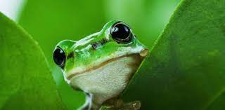
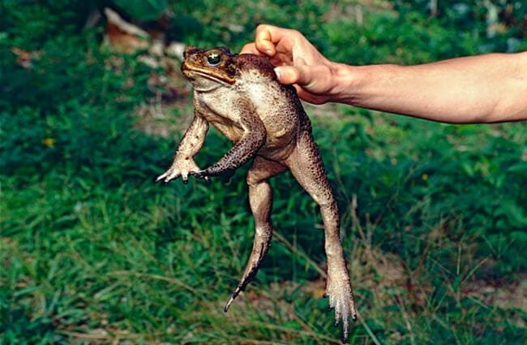

Frogs Versus Toads!
Frogs
Frogs have longer legs! Their legs are made for hopping and leaping.
Frogs are very smooth and like to stay moist- they drink through their skin. They are also prone to losing water very quickly once they leave their wet habitats.
Toads
Toads have much shorter legs- they travel mainly by crawling.
Toads have dry, bumpy skin that is often riddled with warts. Their skin is more water-proof than that of a frog's and they can withstand dry environments much better because of it.